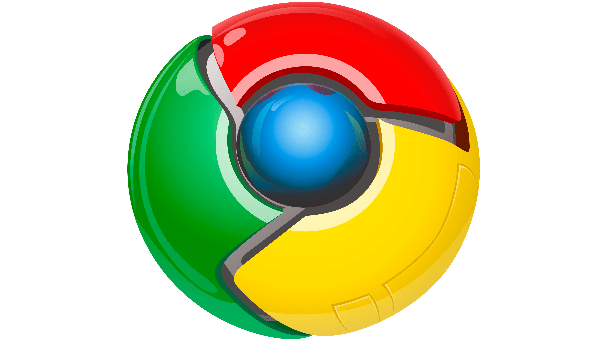

The very first web browser was called WorldWideWeb and was later renamed Nexus. It was created by Tim Berners-Lee in 1990.
Mosaic
Soon after in 1993, the browser Mosaic was released. Mosaic was the first widely used browser that could display text and images in the same page, a success in making the internet more visually appealing and easier to use.
Netscape
After, Netscape Navigator became popular in the mid-1990s. It introduced newer features like bookmarks, email integration, and early support for JavaScript.
Internet Explorer
Internet Explorer was created by Microsoft and first launched on August 16, 1995, as part of the Plus! add-on package for Windows 95. The initial version was based on code licensed from Spyglass Mosaic.
Opera
The Opera web browser was created by Jon Stephenson von Tetzchner and Geir Ivarsøy, releasing the first public version of the browser in 1996. Opera was known for introducing features like Speed Dial and the sidebar, and for its early adherence to web standards.
Safari
Apple introduced Safari on January 7, 2003, as a "turbo-charged" and innovative web browser for Mac OS X, aiming to be the fastest and easiest-to-use browser on the market, and replacing Internet Explorer as the default. Safari is a web browser developed by Apple and pre-installed on all Apple devices. It runs across multiple platforms, including iPhone (IOS), iPad (iPad OS), Mac (macOS), Apple Watch (Watch OS, with limited functionality), and Apple TV (tvOS, with limited web-view capability). Designed specifically for Apple hardware, Safari is known for it strong performance and energy efficiency, making it a preferred browser for devices such as MacBooks. It also includes features like Reader Mode, which streamlines articles for easier reading, and supports a growing library of extensions that enhance productivity and customization. Safari continues to receive updates with the lat3est macOS and iPad OS versions, ensuring compatibility and ongoing platform support.
Mozilla Firefox
Mozilla Firefox was created in 2002 as "Phoenix" by Dave Hyatt and Blake Ross. The standalone browser aimed to address software bloat in the Mozilla Application Suite and was officially released as Firefox 1.0 on November 9, 2004
Chrome

In September 2008, Google Chrome entered the market. Chrome was designed to be fast, simple, and secure. Chrome used a new engine called V8 for JavaScript performance and over the next decade Chrome became the most widely used browser in the world.